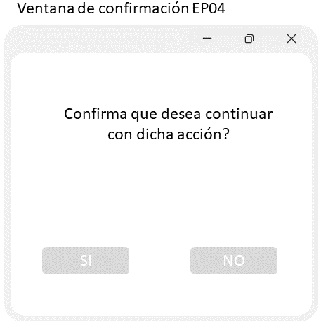

-
RF
- RF01-Generar reporte semanal con las salidas y entradas de productos.
- RF02-Registro de productos.
- RF03-Modificación de características de productos.
- RF04-Eliminación de un producto.
- RF05-Las características de cada producto pueden ser seleccionadas por el usuario.
- RF06-Al registrar un producto con las mismas características, el sistema notificará que se está duplicado dicho producto.
- RF07-Dar a escoger si se reemplaza, guardar 1 o ambos productos.(RF06)
- RF08-Creación de usuarios.
- RF09-Eliminación de usuarios.
- RF10-Guardar plantillas con características específicas para un producto.
- RF11-Inicio de sesión de usuario.
- RF12-Interfaz de control de usuarios.
- RF13-Interfaz de búsqueda de productos.
- RF14-Registro de usuario
-
RNF
- RNF11-El sistema no debe tardar más de 1 segundo en mostrar las búsquedas generadas por el usuario.
- RNF12-El sistema cerrará automáticamente las opciones de registró, modificación y eliminación de un producto si este pasa más de 5 minutos sin actividad.
- RNF13-Solo usuarios autorizados pueden modificar los permisos de usuarios de menor nivel.
-
RX
- RNF11-El sistema no debe tardar más de 1 segundo en mostrar las búsquedas generadas por el usuario.RX22-El sistema permitirá la modificación de las unidades existentes, exclusivamente a usuarios autorizados.
- RX22- El Sistema debe poder ejecutarse y funcionar correctamente en Windows 10,8,7.
Nombre: Registrar producto
Identificador: CU-01
Descripción:
Registrar un producto que no esté previamente registrado.
Condiciones previas:
Que el producto no esté registrado previamente.
Condiciones posteriores:
El producto quedará registrado en la base de datos.
Curso básico de acción:
El caso de uso comienza cuando el usuario quiere registrar un producto.
El usuario ingresará los datos del producto a través de la pantalla de registro de producto PP03.
El sistema verificará que los valores ingresados sean válidos conforme a las restricciones del sistema. [Curso
alternativo A]
El sistema muestra la ventana emergente EP03 con el resumen de los datos ingresados y un mensaje confirmando el correcto
registro del producto o de duplicidad en los productos.[Curso alternativo B]
Curso alterno A
A3. El sistema determina un dato invalido en uno o más de los campos del producto a registrar.
A4. El sistema marca en rojo el recuadro del dato invalido y en la parte delantera del recuadro muestra la leyenda “Dato
no válido”.
A5. El caso de uso continúa en el paso 4.
Curso alterno B
A4. El sistema detecta duplicidad con un producto ya previamente registrado.
A5. El caso de uso termina.
Nombre: Eliminar producto
Identificador: CU-03
Descripción:
Eliminar un producto que esté previamente registrado.
Condiciones previas:
Que el producto esté registrado previamente.
Condiciones posteriores:
El producto quedará eliminado en la base de datos.
Curso básico de acción:
1. El caso de uso comienza cuando el usuario quiere eliminar un producto.
2. El usuario buscará el producto que desea eliminar y selecciona la opción de eliminar en dicho producto.
3. El usuario confirmará a través de la pantalla de confirmación PP04 la eliminación del producto.
4. El sistema verifica que el producto cumpla con la regla de negocio RG04. [Curso alterno A]
5. El sistema elimina el producto.
6. El sistema muestra en la ventana emergente EP05 un mensaje informando de la eliminación del producto.
Curso alterno A
A3. El sistema determina que no se cumple la regla de negocio RG04.
A4. El sistema no permite la eliminación del producto.
A5. El sistema notifica que el producto no ha podido ser eliminado.
A6. El caso de uso termina.
